2023年度高校舆情案例库
2024年度高校舆情案例库
2025年度高校舆情案例库
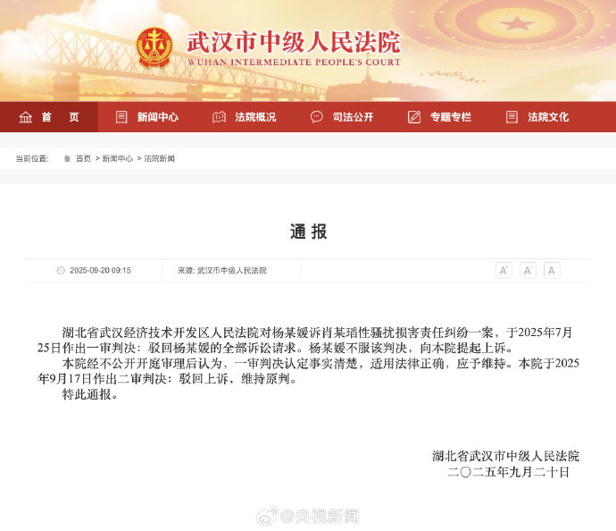
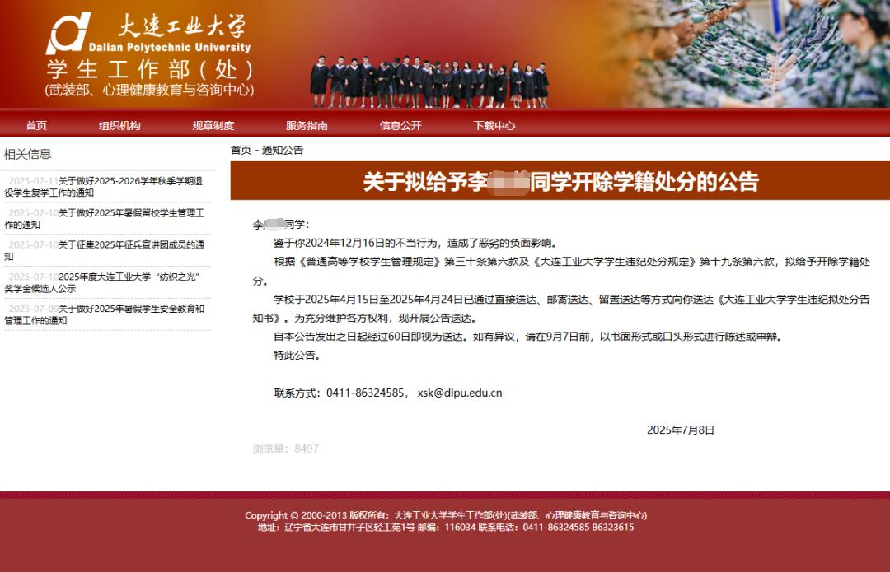
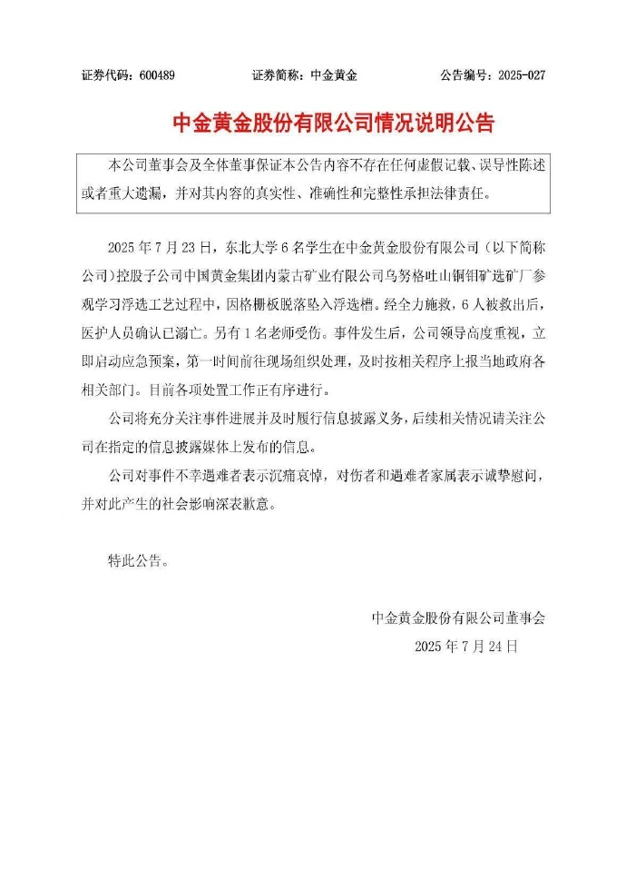
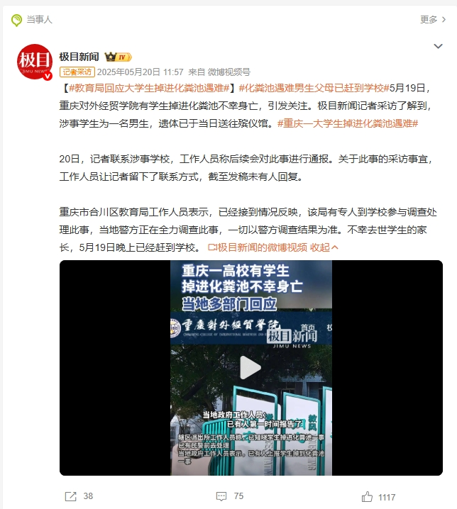
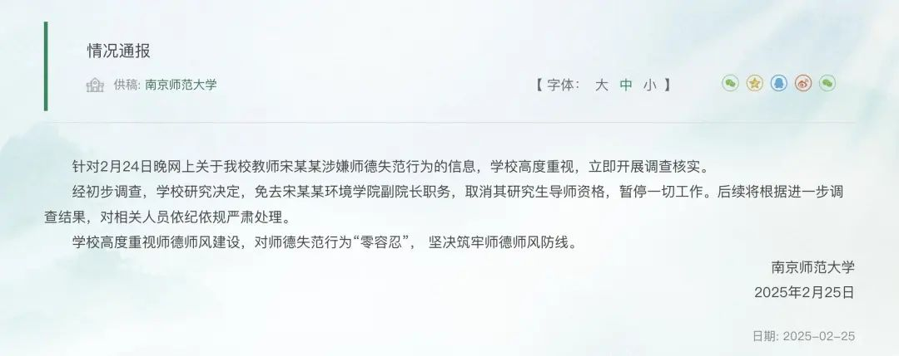

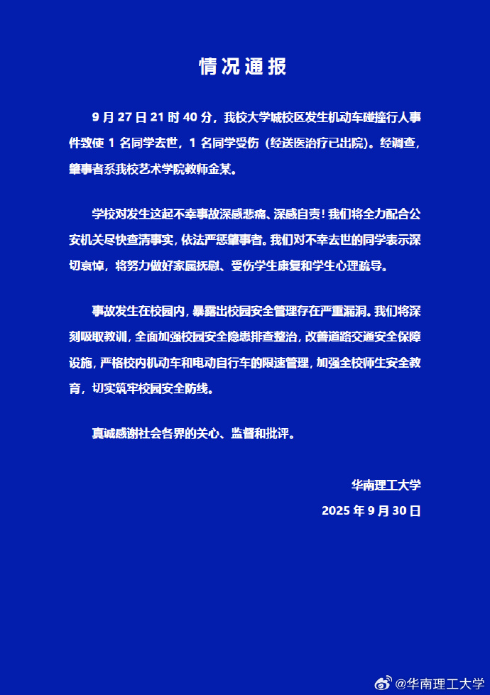
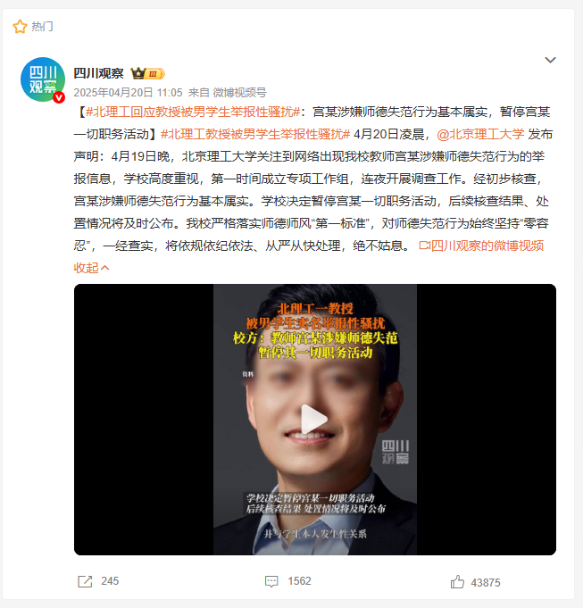

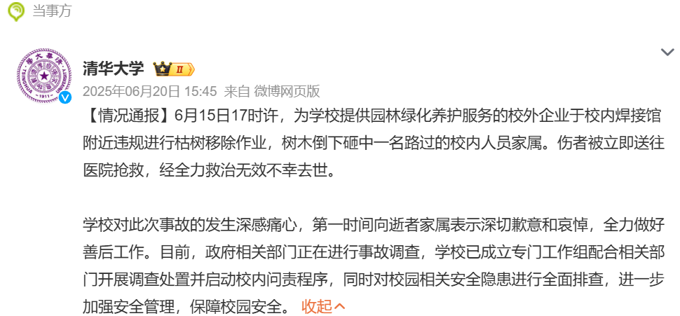
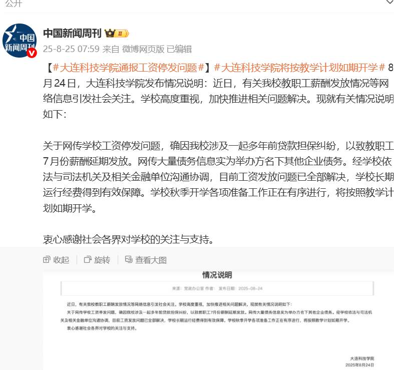
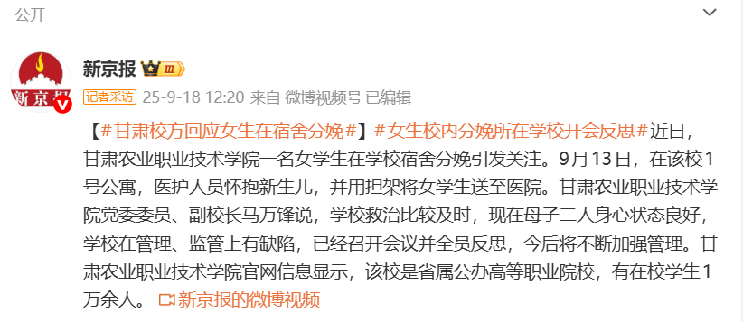
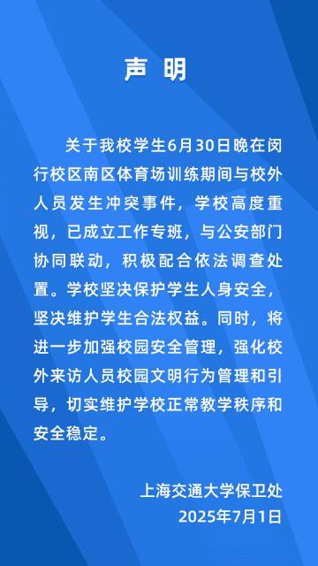
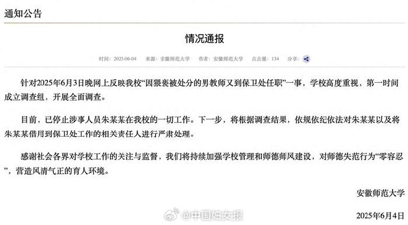
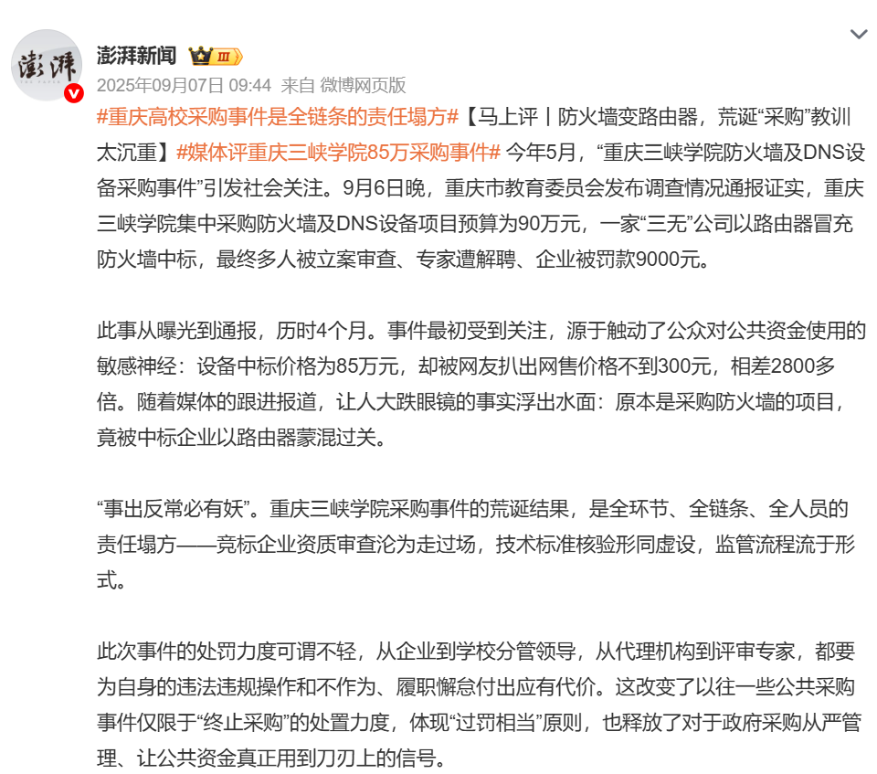
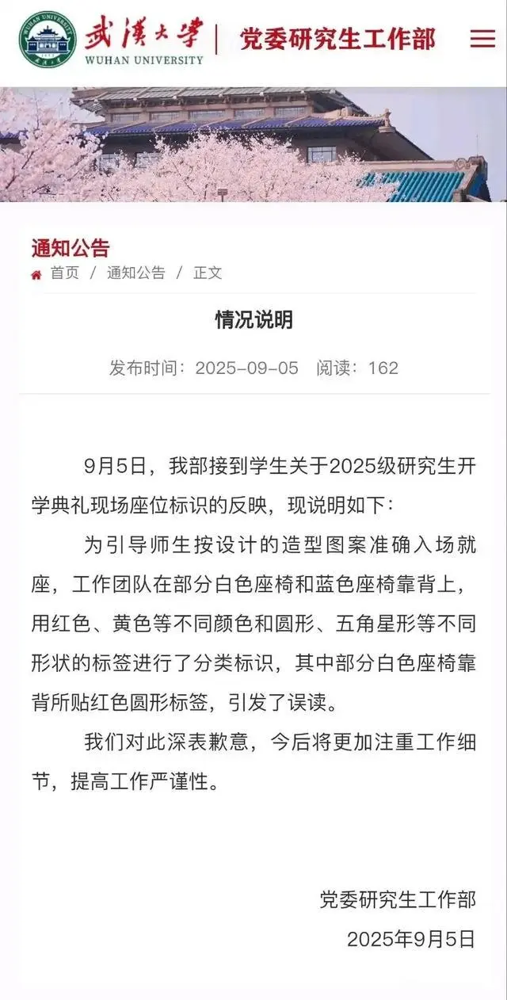
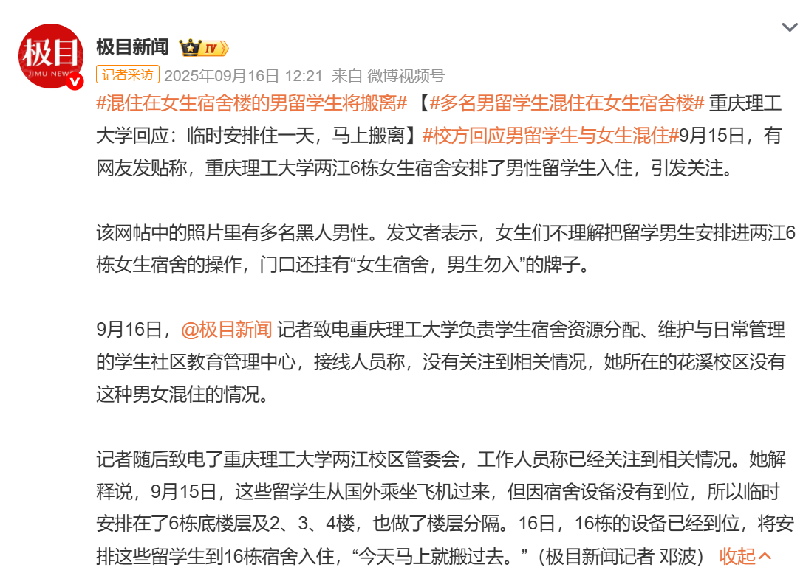
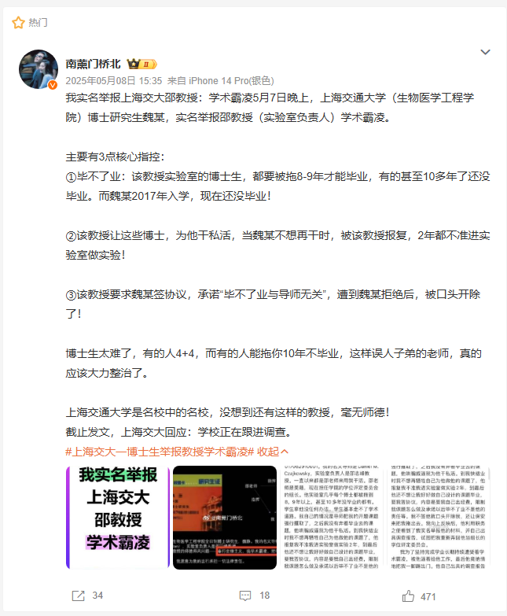
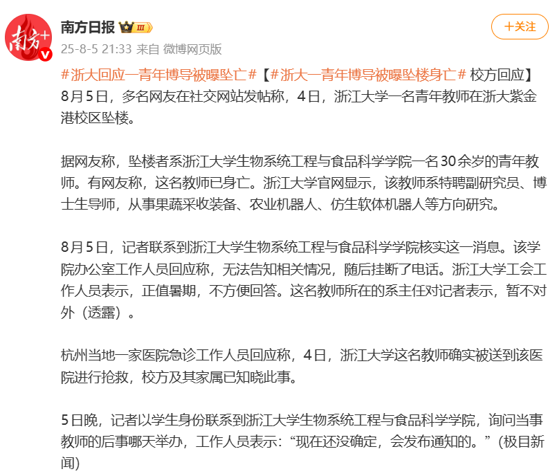
高校负面舆情综合分析
一、舆情事件概况统计
舆情事件类型分布
从分布结构来看，人员道德与行为失范类事件占比最高，反映出高校内部师德师风问题已成为当前舆情高发地带，安全与意外管理类与内部治理与行政效能类各占四分之一左右，表明校园安全与管理运行也是公众关注的，学术伦理与公平争议类占比相对较低，但一旦爆发，往往因其涉及教育公平与学术公信力，会引发大规模持续性的热议。
高校层次分布
高校危机历史分布
二、高校负面舆情回应数据
校方回应次数分布
从回应次数来看，在有过回应的32起案例中，超过一半的学校满足了基本的要求，即回应至少一次且有后续处理结果。绝大多数高校仅发布一次通报，共24起，占回应案例的四分之三；仅有8起案例进行了二次回应。多次回应的案例主要集中在人员道德失范类和学术伦理类事件，如“人大文学院在读博士举报导师性骚扰”、“南华大学回应网传男生造女生黄谣”“苏州大学回应学生恶意P图”等。相反，安全与意外管理类事件往往一次通报后便再无下文，后续调查进展多由警方或第三方发布。
回应间隔时间分布
回应媒体渠道分布
回应策略与责任承担综合分析
高校与公众归因偏差分布
回应后公众情感倾向分布
📋 组态路径玩法说明
1. 右上角可展开/关闭正确组态路径参考
2. 第一排为条件变量，第二排为非条件变量（~）
3. 点击按钮选中/取消，完成后点击确认
4. 匹配成功弹出完整解读，失败则重选
- 1. 行动回应策略 * 高校层次 * 归因偏差
- 2. 行动回应策略 * ~舆情事件类型 * 话语回应策略 * 归因偏差
- 3. ~行动回应策略 * ~危机历史 * ~高校层次 * ~话语回应策略 * 归因偏差
- 4. ~危机历史 * ~高校层次 * ~舆情事件类型 * ~话语回应策略 * 归因偏差
高校舆情危机组态路径
组态匹配结果
高校舆情治理建议
破除“单向输出”思维，找准事件焦点提高回应有效程度
高校在应对负面舆情时，应当建立常态化的舆情受众预期评估机制，在第一时间找到舆论的关注焦点。在事件发生初期，高校不应仅仅依据内部行政视角的事实调查来决定发声基调，而必须同步借助大数据人工智能等手段，精准把脉公众的情感倾向和责任追究焦点。
在建立评估机制方法上，一方面，必须提升使用专业舆情监测软件与大数据分析技术的能力，面对海量信息，唯有借助大模型大数据才能更全面的获知舆论场真实情况；另一方面，面对复杂多变的舆情情境，技术手段仍难以完全替代人的判断力与经验。因此，宜构建“人机协同”的工作机制，在技术层面，通过预设模型，实现舆情的自动化采集与初步筛查；在决策层面，则由高校相关人员进行深度研判与价值评估，以确保舆情应对更具针对性与人文温度。
消解行政冷漠，将人文温度嵌入日常管理与危机回应
高校在长期的行政化运作中，容易形成一种程序正确优先于情感共鸣的回应惯性，而这种人情味的缺失，恰恰是归因偏差被急剧放大的心理放大器。消解行政冷漠，是需要在危机中展现人情味。这具体可以分为三个方面。首先具体回应时机要体现“急人之所急”，尽量迅速地公布调查结果。它向公众表明校方对事件的重视程度与公众的关切程度是同频的。其次回应内容要表达情感。不能只发警情通报，更要表达对遇难者的哀悼和对家属的慰问。最后回应需要结合行动维度的补救。高校应针对不同情境提供实质补偿。
消解行政冷漠，还可以在日常管理中就展现人情味。这可以从以下三个方面着手：第一畅通校园内部反馈与沟通渠道。第二日常决策要嵌入师生视角。如果在政策出台前，能够多一些学生听证、多一些意见征集、多一些换位思考，这种本可以避免的舆情就不会发生。第三师生关系要回归育人本质。
分级治理，构建差异化、系统化的高校舆情治理路径
高校负面舆情事件的演化具有高度的系统性和复杂性。没有任何单一因素能够独立决定舆情回应的成败。因此，高校舆情治理必须走向“组态化”和“差异化”，管理者需要根据自身的高校层次、危机历史以及面临的舆情类型，灵活调用相匹配的策略组合。
高校回应需要建立模板标准，但绝非要求每次的处理都一成不变。高校应加强信息环境维度的协调能力，建立定期评估机制，根据每一场舆情事件的处理效果不断修订和完善回应标准。通过全局思维下的动态管理，将事后被动救火转变为事前风险预估、事中精准回应、事后制度优化的闭环体系。